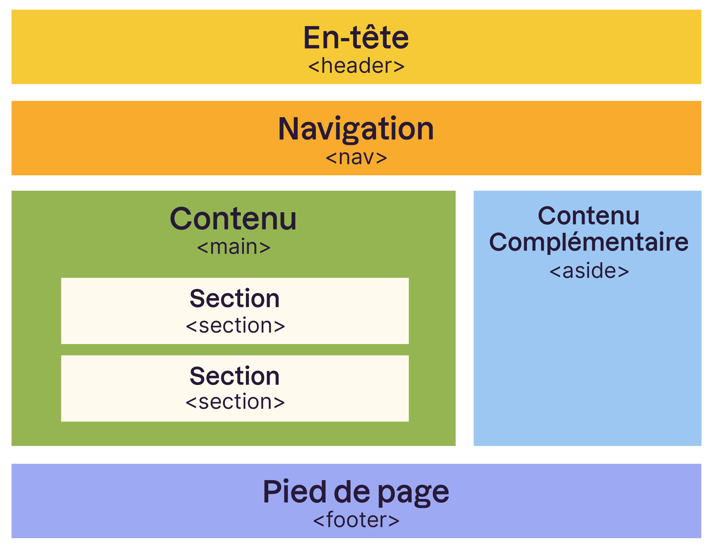

7. Structurer sa page en blocs¶
Il est grand temps d’apprendre à structurer un peu sa page. Pour l’instant, nous sommes uniquement capable d’empiler des blocs d’éléments les uns sur les autres.
Pourtant, une page web ça ressemble plutôt à ça !
Attention
Les balises <header>, <nav>, <main>, <section>, <aside> et <footer> servent à spéficier la structure de votre page pour le navigateur et les robots qui parcourent le web !
Elles n’ont aucun impact visuel ! Il est recommendé de les utiliser pour donner une structure à votre page mais vous pouvez obtenir le même résultat visuel sans elles.
Un modèle de blocs¶
Rappel
En HTML, la plupart des balises peuvent se ranger dans l’une ou l’autre de ces deux catégories:
block: ce type de balise crée automatiquement un retour à la ligne avant et après (ex:<p>,<li>,<h1>).inline: ce type ne crée aucun retour à la ligne (ex:<a>).

Les blocs peuvent aussi être imbriqués. La balise <body> crée en réalité un bloc qui constitue toute votre page et dans lequel vous allez mettre d’autres blocs !
Exercice 1
Retournez sur CodePen pour voir un site sur les flamants roses.
Créez un nouveau bloc englobant les 2 premiers paragraphes de l’introduction. Ce nouveau bloc doit avoir les propriétés suivantes:
Couleur du texte: bleu
Couleur de fond: #f3d5f5
Bordure: pointillée et rouge
Solution
Code HTML:
<div class="bloc-rose">
<p>
Les flamants roses sont des oiseaux qui se trouvent dans des parties de l'Afrique, de l'Asie, des Amériques et de l'Europe.
Ils sont connus pour leur plumage rose vif et leur long cou courbé.
</p>
<p>
Il existe quatre espèces principales de flamants roses, chacune ayant des variations dans la couleur et la taille.
Leurs pattes sont particulièrement longues, ce qui leur permet de parcourir les eaux peu profondes où ils trouvent leur nourriture.
</p>
</div>
Code CSS:
.bloc-rose {
color: blue;
background-color: #f3d5f5;
border: dashed red;
}
Important
Seuls les balises de type block peuvent être redimensionnés ou déplacés sur une page. Il ne serait pas logique de vouloir déplacer un mot dans un paragraphe.
(Il existe en réalité un 3ème type: inline-block. La balise <img> est en réalité de ce type. Les images ne créent pas de retour à la ligne mais peuvent être déplacées et redimensionnées (heureusement !))
Redimensionner ses blocs avec width et height¶
Par défaut, un bloc prend toujours toute la largeur disponible de la page et seulement la hauteur dont il a besoin pour son contenu.
La propriété width va nous permettre de régler la largeur de nos blocs:
p {
width: 50%;
}
Ce qui donnera:

Donner les valeurs en % permet de s’adapter à l’écran mais il est également possible de donner des valeurs absolues en pixels (ex: 250px).
Ajouter des marges à ses blocs avec margin et padding¶
Tous les blocs possèdent des marges intérieures et extérieures:

Pour les modifier, on utilise les propriétés suivantes:
marginpour les marges extérieures (ex:margin: 10px). Cette marge ajoute de l’espace autour du bloc.paddingpour les marges intérieures (ex:padding: 10px). Cette marge ajoute de l’espace à l’intérieur du bloc, comme si on le faisait enfler.
Voici ce que cela donne sur des blocs de textes (paragraphes avec balise <p>):
Testez différentes marges sur ce CodePen.
Être plus précis avec les marges ?
Par défaut, margin et padding modifient les marges tout autour du bloc (dans toutes les directions en même temps).
Il est possible de définir des marges intérieures et extérieures plus précisément en indiquant les directions voulues avec les propriétés suivantes:
Exercice 2
Reprenez le site sur les flamants roses après vos modifications de l’exercice 1.
Faites les modifications suivantes:
Changez la largeur du bloc précédemment créé dans l’exercice 1 à
50%.Ajoutez une marge intérieure de 10 pixels au bloc.
Justifiez le texte qui se trouve dans le bloc.
Aéréz les éléments de la liste à puces en leur ajoutant une marge extérieure de 10 pixels.
Ajoutez la couleur de fond suivante pour la page: #FAF0E6.
Centrez le titre sur la page.
Solution
Aucun changement dans le code HTML.
Code CSS:
.bloc-rose {
color: blue;
background-color: #f3d5f5;
border: dashed red;
text-align: justify;
width: 50%;
padding: 10px;
}
body {
background-color: #FAF0E6;
}
li {
margin: 10px
}
h1 {
text-align: center;
}
Centrer ses blocs avec margin: auto¶
Pour centrer un bloc qui ne prend pas toute la largeur de la page, il faut respecter les règles suivantes:
donner une largeur au bloc avec la propriété
width.indiquer
margin: auto;ce qui va automatiquement remplir les marges extérieurs pour centrer horizontalement le bloc.
Ce code permet de centrer tous les paragraphes de la page avec 50% de la largeur de la page:
p {
width: 50%;
margin: auto;
}
Exercice 3
Reprenez le site sur les flamants roses et centrez sur la page tout le bloc sur l’alimentation de ce magnifique animal.
Ce bloc qui englobe le sous-titre et les deux paragraphes n’existe pas, il faut donc commencer par le créer avec une balise <div>.
Le bloc doit prendre
75%de la largeur de la page.(Challenge): Le sous-titre du bloc “Alimentation” doit être centré dans le bloc.
Solution
Code HTML:
<div class="centre">
<h2>Sous-titre: Alimentation</h2>
<p>
Les flamants roses se nourrissent principalement d'algues, de crevettes et de petits insectes.
</p>
<p>
Ils filtrent ces aliments de l'eau avec un bec spécialisé qui est conçu pour séparer l'eau et la boue de la nourriture qu'ils consomment.
C'est un comportement d'alimentation unique que l'on appelle la "filtration".
</p>
</div>
Code CSS:
.centre {
width: 75%;
margin: auto;
}
/* Challenge */
.centre h2 {
text-align: center;
}
Pour centrer uniquement le sous-titre h2 du bloc centre et pas tous les sous-titres de la page, nous avons défini la propriété pour .centre h2 qui signifie en français: “Toutes les balises h2 incluses dans le bloc centre”.
A ne pas confondre avec .centre, h2 qui inclurait le bloc centre ET tous les sous-titres h2.
Exercice récapitulatif¶
Exercice récapitulatif
Voici le code HTML d’une page présentant un restaurant pour le moins douteux.
<!DOCTYPE html>
<html lang="fr">
<head>
<meta charset="utf-8"/>
<title>Restaurant en boîtes</title>
<link rel="stylesheet" href="index.css"/>
</head>
<body>
<h1> Restaurant en boîtes </h1>
<div class="boite1">
Voici les menus proposés dans mon restaurant:
<div class="boite2">
<ul>
<li>Pâtes au beurre</li>
<li>Paquet de chips avec thé froid de la migros</li>
<li>Saucisses grillées</li>
<li>Sandwich au jambon</li>
<li>Salade du chef</li>
</ul>
</div>
</div>
<div class="boite1">
Voici un lien vers l'image de mon restaurant:
<div class="boite2">
<a href='https://espacescontemporains.ch/wp-content/uploads/2020/07/01_header_skyloungemainoverall2.jpg'>Mon magnifique resto</a>
</div>
</div>
</body>
</html>
En utilisant la structure des blocs vus dans ce chapitre, écrivez le fichier index.css permettant d’obtenir un résultat aussi proche que possible de l’image ci-dessous.
Vous pouvez faire l’exercice directement sur CodePen si vous le souhaitez.
Déposez votre fichier CSS sur Moodle à l’endroit prévu.